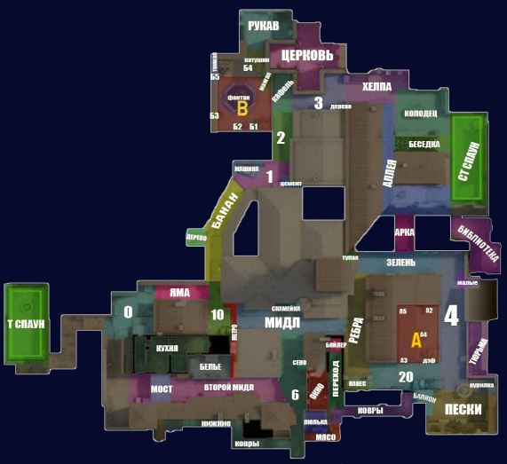
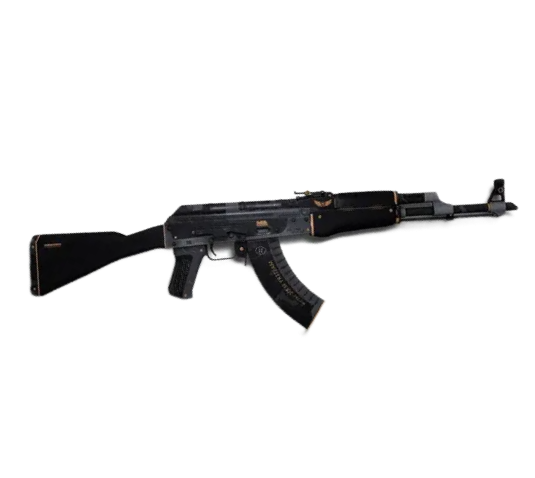
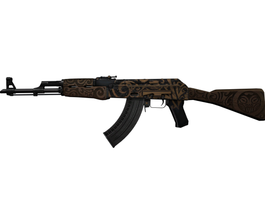

Counter-strike появилась в привычном нам виде не сразу, ведь с самого начала её прототипом служило обычное дополние к игре half-life к той же игровой компании Valve. После этого Counter-strike проделало огромный путь изменений путем обновлений и добавлением новых деталей.
Механика и понимание игры.
Что бы хорошо играть в counter-strike, нужно уметь понимать игру и знать некоторые её азы.
1.Звуки.
В counter-strike очень важно прислушиваться к любому шороху и шагу.
2. Стрельба.
Для того чтобы попадать по врагам не нужно зажимать кнопку стрельбы, достаточно стрелять по врагу одиночными выстрелами.
3. Тихая ходьба.
Чтобы ходить медленно и тихо (не привлекая лишнего внимания)
Нужно зажать кнопку Shift на клавиатуре, или кнопку cntl чтобы ходить в присяде и проходить под препятствиями.
Удачной игры!
Позиции на 3 основных
картах
На поле боя нужно уметь
правильно сообщать место
положение противника.
Для этого игроками были
придуманы названия некоторым позициям
которые понимают
много людей не только
из СНГ.
Их названия странные но
логичные:)
1.Mirage

2.Dust II
 3.Inferno
Дешевые и красивые
скины до 100 рублей:
Рассмотрим две
основные и популярные
винтовки команды
террористов и спецназа
у террористов АК-47
у спецназа M4A4
M4A4-полимерный рожок
AK-47-элитное снаряжение
M4A4-магний
AK-47-затерянная земля